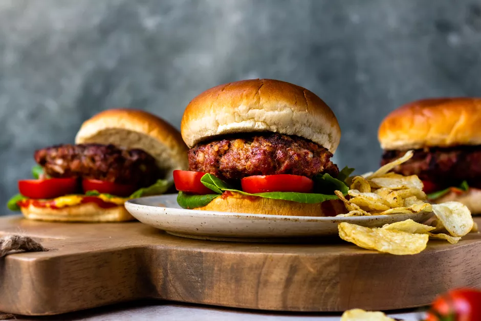

Juicy Beef and Bacon Burger Recipe

Description:
These bacon burgers can be grilled, pan-grilled, broiled, or baked. Simple seasonings and diced bacon make these burgers juicy and delicious.
Ingredients:
- 1 1/2 pounds ground beef
- 1/2 cup finely chopped onion
- 2 slices bacon, diced
- 1 tablespoon Worcestershire sauce
- 1 1/4 cups fresh soft breadcrumbs
- 1 large egg
- 1/2 teaspoon kosher salt
- 1/4 teaspoon freshly ground black pepper
- 2 tablespoons all-purpose flour
- 2 tablespoons vegetable oi
- 6 large hamburger buns, optional
- Toppings and condiments, optional
Steps:
- Gather the ingredients.
- Combine ground beef, onion, bacon, Worcestershire sauce, breadcrumbs, egg, salt, and pepper. Mix with hands until blended.
- Shape the ground beef mixture into 4 to 6 burgers and dust them lightly with the flour.
- Oil the grill grate and heat half of it to high heat or about 400 F to 450 F. The other half of the grill should be low heat
- Place the burgers on the high heat side and cook for about 2 minutes on each side, or until well browned. Move them to the low heat area and continue to cook for another 3 to 5 minutes, or until done as desired.